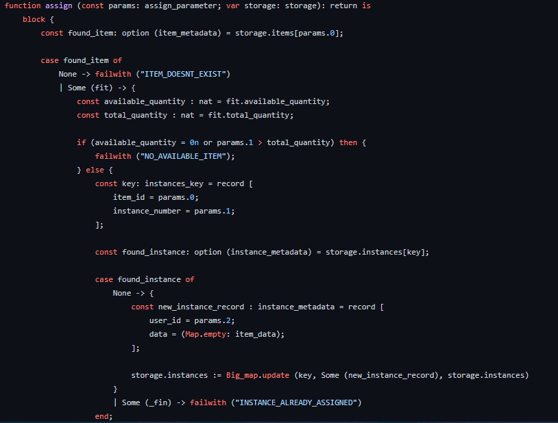
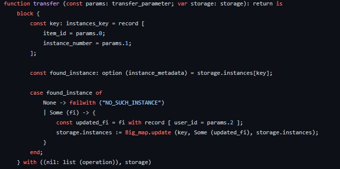
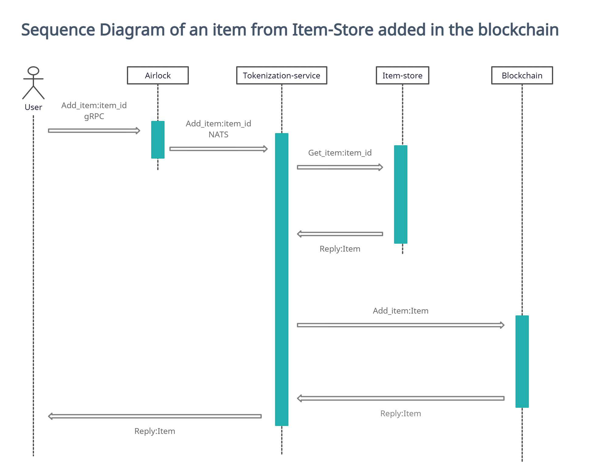
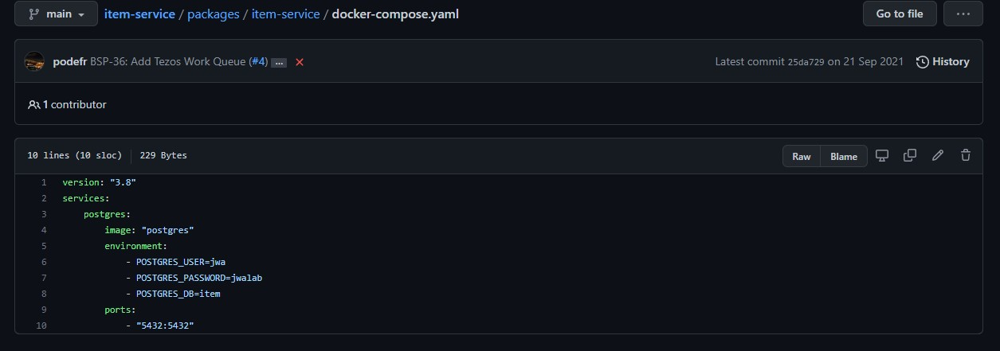
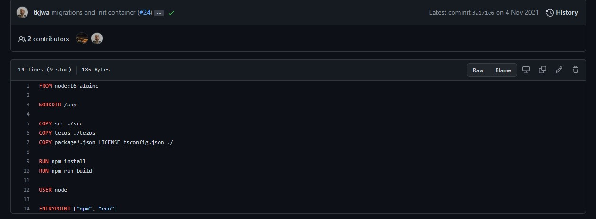

L'objectif du projet PlayTiX étant d'être une plateforme de jeux vidéos liés à la blockchain, le premier projet de l'entreprise a été de mettre en place la "tokenisation" d'item sur la blockchain Tezos.
Qu'est-ce que la blockchain ?
C'est une technologie de stockage et de transmission d'informations, prenant la forme d'une base de données. qui a la particularité d'être partagée simultanément avec tous ses utilisateurs et qui ne dépend d'aucun organe central. a pour avantage d'être rapide et sécurisée.
L'entreprise a choisi la blockchain Tezos pour plusieurs raisons, mais principalement car c'ette blockchain est propice à la création de NFT (Token Non Fongibles)
Afin de permettre aux créateurs et au studios de jeux vidéos de tokeniser des items sur Tezos, l'entreprise à créé une plateforme de services web. Ce projet à été mon premier chez JWA Lab.
Premièrement, j'ai été informé de l'architecture de la plateforme et des technologies que nous utiliserons.
L'architecture est microservices. C'est à dire que la plateforme est composée de deux services, qui communiquent entre eux et qui sont déployés indépendamment. Le premier service est l'Item-Service, il contient les endpoints de l'API. Ce service effectue des opperations avec les items sur une base de données Elasticsearch. Il permet de créer, modifier, assigner, transférer et rechercher des item.
J'ai participé au développement de la plateforme avant son réfactoring.
Le service est disponible en open-source ici
En ce qui concerne le deuxieme service, celui-ci contient les smart-contracts, c'est du code qui permet d'effectuer des opérations sur la blockchain. Pour Tezos les smart-contracts sont codés en langage LIGO, j'ai donc du me former aux bases du langage afin de coder un contrat.
Le contrat en question permet l'assignation et le transfert d'item entre utilisateurs, voici un apercu du code disponible ici :
 Ce service communiquera donc avec l'Item-Service grâce à la technologie Nats. Elle permet aux services de communiquer entre eux de manière performante, ce qui est important pour la plateforme car les opérations sur la blockchain prennent du temps.
Afin de comprendre comment se fait la tokenization d'un item, j'ai créé un diagramme séquence :
Ce diagramme n'est plus effectif car l'application a été refactorisé.
Afin de lancer la plateforme en local, j'avais besoin d'une configuration possèdant une quantité de RAM minimale. Etant donné que je travaille à distance, je doit utiliser mon propre matériel. Ce qui implique de le protéger et de prendre des précautions. Pour la configuration, l'entreprise m'a financé l'achat de 16go de RAM en plus de ce que j'ai déjà, ce qui me fait 24Go au total.
Si il y a besoin d'autant de mémoire vivre, c'est parce que la plateforme est déployée en local sur Docker. Docker est une plateforme permettant de lancer certaines applications dans des conteneurs logiciels. L'intérêt de Docker en développement est de garantir à chaque développeur qu'il pourra lancer l'application quel que soit son système d'exploitation ou sa configuration.
Les applications sont mises en ligne sur la plateforme de Docker, elles sont nommées "images". Dans son projet, il est donc possible de créer un fichier, contenant les images à télécharger et à lancer. Voici un exemple de fichier docker-compose.yml :
Il est aussi possible de créer un fichier de configuration des conteneurs, il est nommé Dockerfile :
Voici un tutoriel video pour comprendre Docker (en anglais)